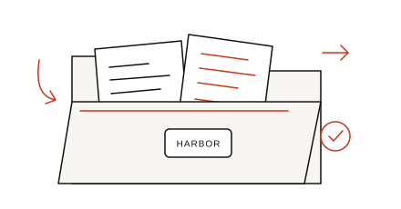
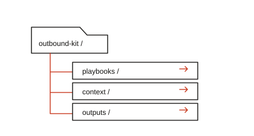

A little research.
A better first
message.
For agency founders choosing their next prospect. Turn source notes into an account brief, a fit check and a message you can review.
Five playbooks, editable templates and a practice case.
GPT-6.1 Sol access is separate.

Five jobs. One useful folder.
Each playbook gives you a clear input and an output to check. Start wherever your account is today.
Your offer.
Your sources.
Your first prompt.
Choose a task and add what you know. The builder assembles the instructions to take into your GPT-6.1 Sol session.
Your inputs stay in this browser tab until you refresh or close it. This page prepares a prompt.
Your prompt
A home for your
outbound work.
Download once. Keep the instructions, account inputs and your edited drafts together.
Download the whole folder ↓
- 01
Download and unzip.
Start with README.md. The folder includes every playbook, input template and practice example.
- 02
Open it in Codex.
Select GPT-6.1 Sol where available. CLI users can run
codex --model gpt-6.1-solin the folder. - 03
Add one account.
Fill in your offer and source notes. Ask Codex to read AGENTS.md, then run research and the fit check.
- 04
Review your next question.
Check citations and offer claims. Edit the draft. ROUTINE.md holds your morning queue and weekly review.
Peek inside the kit.
16 editable files. Five playbooks, source templates and a complete fictional practice case.
Browse the filesRead, copy or download an individual file
Before your first run.
What does the free kit include?
All 16 files: the playbooks, editable inputs, setup instructions, routine and fictional practice case. GPT-6.1 Sol access comes through your own account or billed API and is separate from the download.
Does it send messages?
The kit prepares briefs, fit decisions and drafts. You choose who to contact and send the messages you approve. The browser page has no sending connection.
Can I use source excerpts?
Yes. Paste excerpts with source labels. Browsing can help with public URLs. The research brief states which method was used and keeps missing facts unknown.
Is Harbor Analytics a real client?
The example agency, company, source excerpts and campaign are fictional. They demonstrate the input and output formats and describe no client results or expected booking rate.
Take the whole folder.
Five playbooks. Your inputs. A clear next question.
Free ZIP · Start with README.md